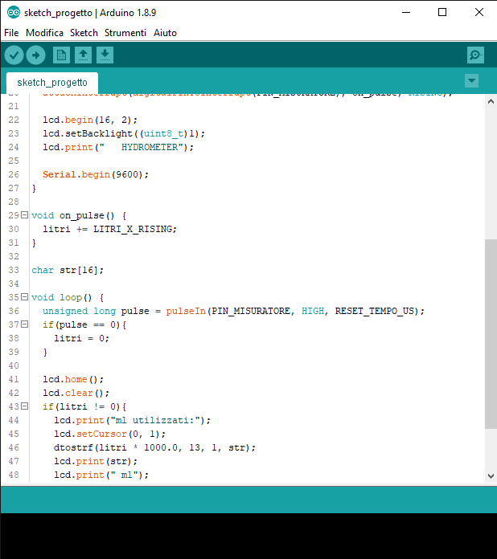

Per controllare tutti i componenti del nostro misuratore d'acqua abbiamo scritto un codice per Arduino Uno. Questo codice è in un linguaggio apposito per la nostra scheda sviluppato proprio per tutte le schede di Arduino.
Quando l'acqua passa attraverso il tubo, il contatore rileva quanta acqua è passata per il tubo e invia segnali alla scheda, che li elabora mostrando il risultato sullo schermo LCD.
Se non passa acqua per più di 30 secondi, il conteggio viene azzerato, attendendo ad un ritorno dello scorrimento dell'acqua.
Il codice è open source e si può visualizzare cliccando qui.